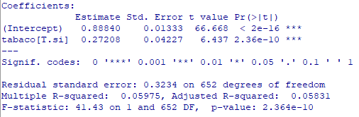

Semana | Tema |
|---|---|
30 oct. al 03 nov. 2024 | - Introducción a los paquetes / lenguajes estadísticos: GUI vs CLI; privativos vs gratuitos/open source. |
- R / R-Commander: Menúes; Lectura de archivos de datos; Estadística descriptiva; Agrupamiento de variables; Factores; Guardado de script y resultados; Paquetes y plugins). | |
06 al 09 nov. 2024 | - Relación entre variables: Covarianza; Correlación (Pearson, Spearman, Kendall). |
- Regresión lineal simple: Presupuestos; Bondad de ajuste; Coeficiente de determinación; Análisis de residuales; Interpretación. | |
13 al 16 nov. 2024 | - Regresión lineal múltiple: Selección de variables; Multicolinealidad. |
- Confusión e interacción. |
Módulo VI: Análisis Epidemiológico Avanzado
Docentes: Tamara Ricardo, Christian Ballejo
Programa de Maestría en Epidemiología para la Salud Pública

OBJETIVOS DE LA UNIDAD
Desarrollar habilidades en el uso de la estadística como herramienta para la investigación epidemiológica.
Adquirir competencias básicas en R y RCommander para realizar análisis de datos en salud pública.
Aprender a ajustar, interpretar y evaluar modelos de regresión lineal simple y múltiple.
Comprender los conceptos de confusión e interacción y su impacto en los análisis estadísticos.
PROGRAMA DE LA UNIDAD
OBJETIVOS DE HOY
Comprender los conceptos de confusión e interacción en los estudios epidemiológicos.
Detectar las variables confusoras y modificadoras de efecto en las regresiones lineales.
Interpretar los coeficientes correctamente frente al ajuste en la regresión.
CONFUSIÓN
Confusión (del latín confundere, mezclar)
En términos generales, es la distorsión de una medida del efecto de una exposición sobre un resultado debido a la asociación de la exposición con otros factores que influyen en la ocurrencia del resultado. La confusión se produce cuando toda o parte de la asociación aparente entre la exposición y el resultado se explica de hecho por otras variables que afectan al resultado y que no se ven afectadas por la exposición.
M. Porta - A Dictionary of Epidemiology - 6th Edition - 2016
CONFUSIÓN
Por lo tanto, una variable confusora es una variable que distorsiona la medida de asociación entre las variables principales. El resultado, en presencia de una variable de confusión, puede ser la observación de:
- Efecto donde en realidad no existe (asociación espuria)
- Exageración o atenuación de una asociación real (confusión positiva)
- Inversión del sentido de una asociación real (confusión negativa) - paradoja de Simpson
CONFUSIÓN
La variable confusora puede ser “real” dentro del modelo teórico estudiado y haberse recolectado en los datos (por ejemplo, la edad y el sexo son variables confusoras en muchos procesos de salud-enfermedad)
La variable confusora puede estar representada en los datos debido al desequilibrio de los grupos (heterogeneidad) pero no tener efecto confusor real en el modelo teórico.
Podría existir una variable confusora dentro del modelo teórico y no haberse medido (variable no observada - análisis de sensibilidad)
CONFUSIÓN PRODUCTO DE OTROS SESGOS
Ejemplos de causas de la confusión en estudios observacionales
- Confusión por indicación: Al evaluar el efecto de un medicamento en particular, muchas veces las personas que toman el medicamento difieren de las que no lo toman según la indicación médica para la que se prescribe el medicamento.
CONFUSIÓN PRODUCTO DE OTROS SESGOS
- Sesgo de selección: No todas las personas invitadas a participar en un estudio participan, lo que causa un desequilibrio entre los grupos.
- Sesgo de recuerdo: No todas las personas con una exposición recuerdan su historial de exposición correctamente, lo que quizás cause un recuerdo desigual en diferentes grupos.
MODELOS TEÓRICOS - DAG
Para conceptualizar este y otros mecanismos en epidemiología se suele utilizar grafos acíclicos dirigidos (DAGs en inglés).
Su nombre se debe a que no forman un ciclo cerrado y las variables están unidas por flechas dirigidas.
Se aplican en la inferencia causal para abordar estudios observacionales y a partir de las asociaciones asegurar relaciones causales entre las variables.
Permiten visualizar el modelo teórico de manera sencilla y controlar sesgos, variables confusoras, etc,
DAG - SIMPLE
ROL DE LAS VARIABLES
Además de las variables de exposición y desenlace (medida o evento de interés), las variables pueden tomar diferentes roles:
Confusora
Mediadora
Modificadora de efecto
Colisionadora
Antecesora
No observada
VARIABLES CONFUSORAS
Una variable cumple el rol de confusora, si:
Se asocia con la exposición.
Se asocia con el desenlace.
Nota: la variable confusora no puede ser un paso intermedio en la vía causal entre la exposición y el desenlace (variable mediadora).
DAG - CONFUSION
PARADOJA DE SIMPSON
Es el caso de confusión en sentido negativo, cuando se invierte el sentido de una asociación.
- Descripta en 1951 por Edward Simpson y conocida también bajo el nombre “efecto Yule-Simpson”
- Existe como caso de confusión en muchas situaciones de la epidemiología, como por ejemplo, en la vacunación de COVID-19, aprovechado por grupos antivacunas que decían que se morían mas vacunados que no vacunados (a partir de tasas crudas globales), donde la edad confundía la relación.
PARADOJA DE SIMPSON
Un ejemplo claro lo observamos aquí: si analizamos los datos totales, vemos que un 75% de las personas que fallecieron en accidentes de tráfico llevaba el cinturón de seguridad (110 de 145), llegando a la conclusión (errónea) de que el cinturón de seguridad no es eficaz.
Sin embargo, si analizamos los datos por subgrupos, vemos que en los accidentes sin cinturón mueren el 70% de las personas (35 de 50) y en aquellos donde las personas llevaban el cinturón mueren solo el 11% (110 de 950). Es la conclusión contraria a la anterior.
CONTROL DE LA CONFUSIÓN
- En el diseño del estudio:
- Aleatorización (estudios experimentales)
- Restricción
- Pareamiento
- Al momento de analizar los datos:
- Estandarización (ajuste de tasas)
- Estratificación
- Modelos multivariados (ajuste).
CONTROL EN EL DISEÑO
Aleatorización
El objetivo de la asignación al azar de los tratamientos (exposición), que solo se puede hacer en los estudios experimentales, es lograr la formación de grupos homogéneos en lo que se refiere a todas las características que puedan influir en el riesgo de desarrollar el evento (edad, sexo, masa corporal u otras características que no se puedan medir), lo que se busca lograr es que los grupos sean similares en todo excepto en la exposición que se busca evaluar.
Restricción
La restricción limita el estudio a personas que tienen características especiales.Por ejemplo, para controlar la edad se puede restringir la muestra a un grupo de edad específico al momento de diseñar el estudio.
CONTROL EN EL DISEÑO
Apareamiento
Cuando se controla el fenómeno de confusión mediante apareamiento o emparejamiento, los participantes en el estudio (por ejemplo, casos y controles) se seleccionan de manera que los potenciales factores de confusión se encuentren distribuidos de forma similar en los dos grupos que van a compararse.
Por ejemplo, un estudio caso-control para investigar la relación entre la exposición al humo de tabaco (exposición) y el riesgo de cáncer de pulmón (desenlace).
Se empareja cada caso con un control que tenga el mismo sexo y una edad similar (ej: dentro de 5 años de diferencia).
CONTROL EN EL ANÁLISIS
Estandarización
Es una técnica estadística utilizada para controlar variables confusoras al comparar tasas (como tasas de incidencia o mortalidad) entre diferentes poblaciones. Permite ajustar las diferencias en la distribución de variables como la edad, sexo u otras características demográficas que podrían influir en las tasas. Existen métodos directos e indirectos.
Estratificación
Consiste en dividir los datos en estratos según los valores de una o más confusoras y luego analizar la asociación entre exposición y desenlace dentro de cada estrato.Permite observar la asociación en subgrupos homogéneos, eliminando el sesgo por confusión en cada estrato. La desventaja es que no obtenemos resultados globales.
ANALISIS MULTIVARIADO
Todos los modelos de regresión posibilitan incluir variables confusoras o potencialmente confusoras que se ajustan en la relación entre la exposición y el desenlace, proporcionando una estimación del efecto controlado por el impacto de estos confusores.
Es importante desarrollar el modelo teórico del objeto que se está estudiando para caracterizar el verdadero rol de cada covariable y así identificar estas potenciales confusoras para ajustar adecuadamente la regresión.
INTERPRETACIÓN EN LA RLM
En términos generales, se habla de confusión cuando existen diferencias estadísticas importantes entre las estimaciones brutas de una asociación y las ajustadas por los posibles factores de confusión, o el efecto cambia la significación.
Existe un consenso en la bibliografía: una variable puede considerarse confusora cuando su ajuste es responsable de un cambio de al menos un 10% en la magnitud de la diferencia entre las estimaciones ajustadas y las brutas.
SOSPECHA EN LA EXPLORACIÓN
Los gráficos estadísticos pueden ser herramientas muy útiles para sospechar la presencia de confusión al observar la relación entre la exposición y el desenlace junto con posibles variables confusoras.
Si al observar los gráficos se detecta que los patrones entre exposición y desenlace cambian al controlar visualmente por una tercera variable, eso sugiere una posible confusión.
Si encontramos diferencias visualmente notables en la distribución de una variable confusora entre grupos de exposición también pueden indicar confusión.
Gráficos de dispersión, de barras apiladas o segmentadas y boxplots son útiles para explorar estas situaciones.
EJEMPLO
El volumen espiratorio forzado (VEF1) es un índice de la función pulmonar que mide el volumen de aire expulsado después de 1 segundo de esfuerzo constante. En 1970 se realizó un estudio de enfermedades respiratorias infantiles (ERC) con 654 niños de 3 a 19 años de East Boston, Massachusetts.
En una tabla se recolectaron los datos de VEF, TABACO (si fuma o no), SEXO, EDAD, ALTURA (medida en centímetros).
Una de las preguntas de investigación fue ¿si el fumar afecta la capacidad pulmonar?
La regresión lineal simple (relación cruda) entre TABACO y el VEF resulta:
Es decir la ecuación de la RL sería:
\[ \operatorname{\widehat{vef}} = 0.89 + 0.27(\operatorname{tabaco}_{\operatorname{si}}) \]
Parece que el fumar afecta al volumen espiratorio forzado aumentando la capacidad pulmonar. Será así?
La regresión lineal múltiple (relación ajustada por ALTURA) es de:
\[ \operatorname{\widehat{vef}} = -2.28 - 0.01(\operatorname{tabaco}_{\operatorname{si}}) + 0.02(\operatorname{altura}) \]
La variable ALTURA provoca que la variable TABACO pierda significación.
Además el \(R^2\) ajustado aumenta del 6 al 79,5 %, evidenciando que ALTURA explica mucho más de la variabilidad de VEF por si sola.
Veamos como se relaciona ALTURA con la exposición y el desenlace:
\[ desenlace \sim confusora = VEF \sim ALTURA \]
\[ exposicion \sim confusora = ALTURA \sim TABACO \]
Como se visualiza en la exploración gráfica. Si observamos como se relaciona VEF con TABACO:
Y si vemos las variables juntas (VEF + ALTURA + TABACO):

CONCLUSIÓN
Encontramos que en esta muestra el efecto del TABACO sobre el volumen espiratorio forzado (VEF) visto en la regresión lineal simple pierde significación frente al ajuste con la variable ALTURA, que explica el 79,5% de la variabilidad.
La ALTURA resulta un confusor en la relación TABACO ~ VEF.
VARIABLES MEDIADORAS
Decíamos que no se debe incluir como confusora a una variable que se ubica en el paso intermedio de la vía causal entre la exposición y el desenlace. A estas variables se las denominan mediadoras.
El efecto total de una exposición sobre el desenlace se divide en efecto directo y efecto indirecto que pasa por la variable mediadora si la incluímos en el modelo.
DAG - MEDIADORA
EJEMPLO
Imaginemos un estudio sobre la relación entre actividad física (exposición), índice de masa corporal - IMC (mediadora), y riesgo de diabetes (desenlace):
Efecto directo: Al incluir el IMC en el modelo, se obtiene el efecto de la actividad física sobre el riesgo de diabetes independientemente de los cambios en el IMC.
Efecto indirecto: Parte del efecto de la actividad física sobre el riesgo de diabetes ocurre a través de la reducción del IMC. Este efecto indirecto solo puede estimarse modelando la relación entre actividad física e IMC y luego el impacto del IMC sobre la diabetes.
Efecto total: Si no incluyeras el IMC en el modelo, obtendríamos el efecto total de la actividad física en el riesgo de diabetes, que incluye tanto los efectos directos como los indirectos.
EJEMPLO FEV
En el modelo teórico del volumen expiratorio forzado la ALTURA es una variable que está relacionada con EDAD en estos niños y jóvenes de 3 a 19 años. A mayor EDAD, mayor ALTURA y por lo tanto mayor capacidad pulmonar.
Por lo tanto, si comparamos los efectos que tienen estas variables (que explicarían lo mismo) sobre el VEF:
RLS VEF ~ EDAD

RLS VEF ~ ALTURA
RLM VEF ~ EDAD + ALTURA
\[ \operatorname{\widehat{vef}} = 0.051 + 0.087(\operatorname{edad}) \]
\[ \operatorname{\widehat{vef}} = -2.271 + 0.021(\operatorname{altura}) \]
\[ \operatorname{\widehat{vef}} = -1.971 + 0.02(\operatorname{edad}) + 0.017(\operatorname{altura}) \]
CONCLUSIÓN
Encontramos que si incorporamos la ALTURA a la regresión de VEF según EDAD, el efecto de EDAD se divide en efecto directo e indirecto. Si utilizamos solo una de ellas vemos el efecto total sobre el VEF.
:::
INTERACCIÓN
Modificación de efecto (sin.: modificación de medida de efecto, interacción)
Variación en la medida de efecto seleccionada para el factor en estudio a través de los niveles de otro factor.
M. Porta - A Dictionary of Epidemiology - 6th Edition - 2016
INTERACCIÓN
Se habla de interacción biológica entre dos o más factores causales cuando existe una interdependencia entre sus mecanismos de acción para causar, prevenir o controlar una enfermedad, de manera que la incidencia de enfermedad atribuible a este conjunto de factores causales es diferente de la incidencia esperable de sus efectos individuales.
A diferencia de la confusión, que es un sesgo o distorsión que se debe controlar y corregir, el fenómeno de interacción no debe “controlarse”, sino que debe ser descripto, del modo más exhaustivo que sea posible, porque enriquece al análisis del objeto de estudio.
INTERACCIÓN
Si una variable es un modificador de efecto, el papel como posible variable de confusión es secundario.
Las interacciones se pueden encontrar entre una variable cuantitativa y una categórica, entre dos variables categóricas o dos variables continuas. Los mismos conceptos se aplican a cualquier combinación de variables en una interacción.
Descubrir interacciones siempre es un objeto que debe incluirse en el estudio
INTERACCIÓN
Ejemplo de interacciones
Dada dos variables X e Y, donde X es la exposición e Y es el desenlace, las pendientes difieren en función de C, que modifica el efecto de X sobre Y.
EJEMPLO
Continuemos con la anterior tabla de datos sobre el volumen espiratorio forzado (VEF), ahora utilizando la variable EDAD como ajuste sobre el efecto de TABACO sobre VEF.
Primero vamos a mostrar los gráficos exploratorios, similares a los vistos con ALTURA y luego procederemos con las regresiones.
Visualizamos las variables juntas (VEF + EDAD + TABACO):
A partir del gráfico sospechamos que TABACO tiene efectos diferentes a distintos niveles de EDAD, por lo que vamos a analizar incluyéndola como variable de interacción
Volvamos a ver la regresión lineal simple (relación cruda) entre TABACO y el VEF:
Es decir la ecuación de la RL es:
\[ \operatorname{\widehat{vef}} = 0.89 + 0.27(\operatorname{tabaco}_{\operatorname{si}}) \]
La formula en el modelo se hace multiplicativa entre las variables independientes.
\[ VEF \sim TABACO * EDAD \]

La regresión lineal múltiple (incorporando EDAD como modificadora de efecto) es:
\[ \operatorname{\widehat{vef}} = -0.03 + 0.85(\operatorname{tabaco}_{\operatorname{si}}) + 0.1(\operatorname{edad}) - 0.07(\operatorname{tabaco}_{\operatorname{si}} \times \operatorname{edad}) \]
La variable EDAD tiene una interacción significativa sobre TABACO.
Además el \(R^2\) ajustado aumenta al 62 %, evidenciando que esa interacción explica mejor al VEF.
INTERPRETACIÓN
Cuando una interacción es significativa no se puede hablar de una variable sin mencionar a la otra, es decir no podemos hablar de efecto de TABACO sin incluir en la interpretación a EDAD.
\[ \operatorname{\widehat{vef}} = -0.03 + 0.85(\operatorname{tabaco}_{\operatorname{si}}) + 0.1(\operatorname{edad}) - 0.07(\operatorname{tabaco}_{\operatorname{si}} \times \operatorname{edad}) \]
Se interpreta que el VEF varía 0,95 por cada año que aumenta la EDAD en los que no fuman y varía 0,88 por cada año que aumenta la EDAD en los que fuman.
RESUMEN
Las regresiones son herramientas de análisis muy útiles para aislar el efecto de las variables y controlar múltiples confusores.
El rol de las variables depende fundamentalmente del modelo teórico del contexto en el que estamos trabajando.
Si deseamos medir el efecto total de una variable, no se debe incluir otra si cumple el rol de mediadora.
Las interacciones que existan en las complejas relaciones entre variables de un modelo, pueden y deben ser incluidas en la regresión.